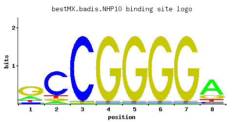

← All factors / TF RECORD
NHP10
YDL002C, HMO2
Protein related to mammalian high mobility group proteins; preferentially binds DNA ends, protecting them from exonucleatic cleavage; likely component of the chromatin-remodeling complex INO80 complex; proposed to be involved in DNA repair
01 / RECOMMENDED MATRIX
Best-performing DNA-binding model.

Fisher’s P-valueNo data
Information content13.34
Max PWM score11.77
Recommended cutoff8.84
View and copy the recommended matrices ↘
Position frequency matrix (PFM)
A | 0.20 0.08 0.01 0.01 0.01 0.01 0.01 0.67 C | 0.10 0.76 0.97 0.01 0.01 0.01 0.01 0.08 G | 0.60 0.08 0.01 0.97 0.97 0.97 0.97 0.18 T | 0.10 0.08 0.01 0.01 0.01 0.01 0.01 0.08
Position count matrix (PCM)
A | 20 8 1 1 1 1 1 67 C | 10 76 97 1 1 1 1 8 G | 60 8 1 97 97 97 97 18 T | 10 8 1 1 1 1 1 8
Position weight matrix (PWM)
A | -0.47 -1.39 -3.47 -3.47 -3.47 -3.47 -3.47 0.74 C | -0.59 1.44 1.68 -2.89 -2.89 -2.89 -2.89 -0.81 G | 1.20 -0.81 -2.89 1.68 1.68 1.68 1.68 0.00 T | -1.16 -1.39 -3.47 -3.47 -3.47 -3.47 -3.47 -1.39
02 / COMPARATIVE BENCHMARKS
Alternative candidate matrices 0
Historical matrix candidates from the original ScerTF database. Expand a source to inspect its original logo, scores, and matrix values.
No additional matrices in the original archive.
03 / EXPERIMENTAL CONTEXT
Gene-level annotations and interactions.
Genes bound in ChIP-chip experiments 1 genes
No Data
Genes affected by TF deletion 1 genes
No Data
Genes supported by both experiments 1 genes
No Data
Predicted TF–TF partners 9 genes
GIS1, HMS1, LYS14, RGM1, RSC3, STP1, STP2, SUT1, USV1